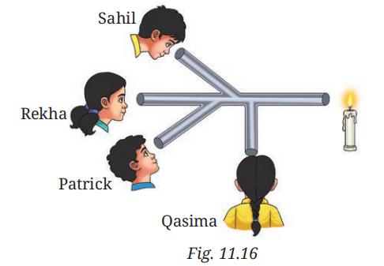
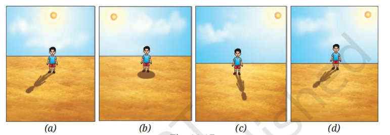
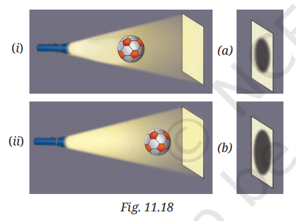
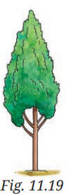
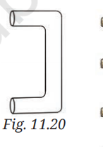

SCIENCE CLASS- 7
CHAPTER-11 (Light: Shadows and Refl ections)
Let Us Enhance Our Learning
1. Which of the following are luminous objects?
Objects: Mars, Moon, Pole Star, Sun, Venus, Mirror
Answer:
Sun and Pole Star are luminous objects because they emit their own light.
Mars, Moon, Venus, and Mirror are non-luminous objects because they only reflect light.
2. Match the items in Column A with those in Column B.
| Column A | Column B |
|---|---|
| Pinhole camera | Forms an inverted image |
| Opaque object | Blocks light completely |
| Transparent object | Light passes almost completely through it |
| Shadow | The dark region formed behind the object |
3. Sahil, Rekha, Patrick, and Qasima are trying to observe the candle flame through the pipe as shown in Fig. 11.16. Who can see the flame?

Image Source- NCERT
Answer:
Rekha can see the candle flame because she is looking through the straight path connected directly to the flame. Since light travels in a straight line, the others cannot see the flame through the bent portions of the pipe.
4. Look at the images shown in Fig. 11.17 and select the correct image showing the shadow formation of the boy.

Image Source- NCERT
Answer:
Option (c) is correct.
The Sun is shown towards the upper right side. Therefore, the shadow should form on the opposite side, that is, towards the lower left side of the boy.
5. The shadow of a ball is formed on a wall by placing the ball in front of a fixed torch as shown in Fig. 11.18. Choose the most accurate representation of the shadows formed in both scenarios.

Image Source- NCERT
Answer:
When the ball is closer to the torch, the shadow becomes larger.
When the ball is closer to the wall, the shadow becomes smaller.
Therefore, Option (a) correctly represents the shadows.
6. Match the position of the torch in Column A with the characteristics of the ball’s shadow in Column B.
Image Source- NCERT
| Column A | Column B |
|---|---|
| If the torch is close to the ball | The shadow would be larger |
| If the torch is far away | The shadow would be smaller |
| If the ball is removed from the set-up | A bright spot would appear on the screen |
| If two torches are present in the set-up on the left side of the ball | Two shadows would appear on the screen |
7. Suppose you view the tree shown in Fig. 11.19 through a pinhole camera. Sketch the outline of the image of the tree formed in the pinhole camera.

Image Source- NCERT
Answer:
The image formed by a pinhole camera will be upside down (inverted).
The tree's top will appear at the bottom and the bottom part will appear at the top of the image.
8. Write your name on a piece of paper and hold it in front of a plane mirror. Sketch the image. What difference do you notice? Explain the reason for the difference.
Answer:
The image of the name appears reversed from left to right.
This happens because a plane mirror produces lateral inversion. The left side of the object appears on the right side in the image and the right side appears on the left side.
9. Measure the length of your shadow at 9 AM, 12 PM, and 4 PM.
(i) At which of the given times is your shadow the shortest?
Answer:
The shadow is shortest at 12 PM (noon).
(ii) Why do you think this happens?
Answer:
At noon, the Sun is nearly overhead. Therefore, the sunlight falls almost vertically on the ground, producing the shortest shadow.
10. On the basis of the following statements, choose the correct option.
Statement A: Image formed by a plane mirror is laterally inverted.
Statement B: Images of alphabets T and O appear identical to themselves in a plane mirror.
Answer:
Option (i) Both statements are true.
Statement A is true because plane mirrors produce lateral inversion.
Statement B is also true because T and O have vertical symmetry and appear unchanged in a mirror.
11. Suppose you are given a tube of the shape shown in Fig. 11.20 and two plane mirrors smaller than the diameter of the tube. Can this tube be used to make a periscope? If yes, mark where you will fix the plane mirrors.

Image Source- NCERT
Answer:
Yes. The tube can be used to make a periscope.
One mirror should be fixed at the upper bend of the tube and the other at the lower bend. Both mirrors should be placed at an angle of approximately 45° to the tube so that light reflected from the first mirror reaches the second mirror and then enters the observer's eye.
12. We do not see the shadow on the ground of a bird flying high in the sky. However, the shadow is seen on the ground when the bird swoops near the ground. Think and explain why it is so.
Answer:
When a bird flies very high, its shadow spreads over a large area and becomes very faint. Therefore, it is difficult to observe on the ground. When the bird comes closer to the ground, the shadow becomes darker, sharper, and smaller, making it clearly visible.